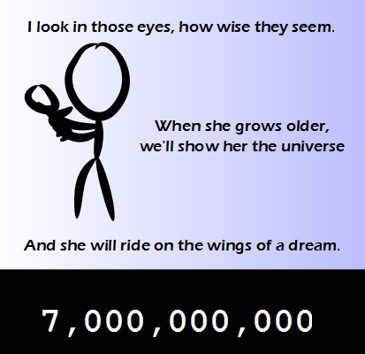

Comic JK 802
When I Feel Like It
⇤
<
?
>
⇥

⇤
<
?
>
⇥
Forum
.
RSS
.
Digg
.
Facebook
.
Reddit
.
Twitter
.
Stumbleupon
Enter your thoughts on number 802 here. Please, no spamming, trolling, or reproducing (feel free to do testruns, though). 7 billion what? Site hits? Apples? > People. i don't get it >7 billionth baby. >>more precisely, 7 billionth simultaneously living person >>>That's a LOT of people. It is one hell of a parallelized simulation >I wonder how many commits have been made to the source code by now. >>Well, we have a lot of merge operations and random modifications... I found that news very very stupid, and hard to believe. How is it possible to know exactly how many people are on earth? Not everyone can be accounted for. It's just an approximation, and they made too much of a fuzz about it. >Demographics are very predictable - they can combine many data points >> It's still an approximation at best. >>> Little do you know everyone on the planet has a chip implanted in them that constantly communicates back to a mainframe verifying they are still alive. It makes counting simultaneously living people quite easy. 7,001,151,970. Precisely. 7,001,151,968. Precisely. 7,001,151,974. Precisely. 7,001,151,973.89. Precisely. 7,001,151,845.89. Precisely. (Another Kool-Aid incident) 7,001,151,845 + 24/61 + e^(2πi)/23. Precisely. (Limbs went a-flyin'). 3. Pricelessly. I just made +1 with your mother, but I'm going to be a deadbeat about it. >>7e9 +- yo mama Now if I can just get everyone to give me a dollar. >Start walking around the world. Ask everyone you meet for spare change. Not everyone will give you a dollar, but I reckon probably a quarter of the people you ask would give you something. Although certain poor areas may feed you rice instead of giving you money. But hey, free meal. But at the end it might be annoying converting all the spare money you got to the currency of your home country. 7 billion people out there... and yet I can't find a girl! >Pray tell, do you live in some sort of boys/mens only boarding school? >>I AM THE SCHOOL. BAHA. >It's really easy to find a girl. The problem comes when you try to find your girlfriend (or rather _make_ your girlfriend, since she doesn't exist yet)